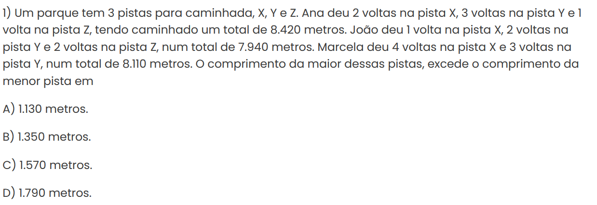

O que são?
Assim como os sistemas vistos anteriormente, os sistemas 3x3 apresentam 3 equações conjuntas e, normalmente, 3 incógnitas. Por exemplo:
Como resolvê-los
Podemos utilizar os 2 métodos vistos anteriormente, o da adição e o da substituição e para esses métodos temos a mesma forma de determinar o tipo (SPD, SPI ou SI) dos sistemas 2x2. Podemos também utilizar o método do escalonamento.
Método do escalonamento (Eliminação de Gauss)
Consiste em pegar os coeficientes e o resultado da equação e colocá-los em uma matriz. Com ela fazemos operações para zerar um coeficiente da segunda linha e dois coeficientes da segunda linha. Ao fazer isso a ultima equação nos dará o valor de uma incógnita e assim conseguimos resolver as outras duas equações.
Dica: é sempre bom deixar o elemento a11 da matriz como 1.
Exemplo de conversão de um sistema 3x3 em matriz:
Questões
Questão 01 - Retirada da lista de exercícios da Profª. Drª. Valéria Espindola Lessa
Questão 2 - Que tal dificultarmos um pouco? (ITA - 2023 1° Fase)
